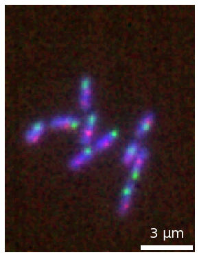
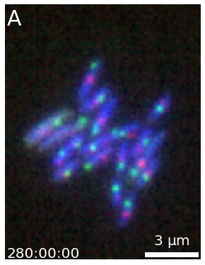
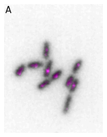
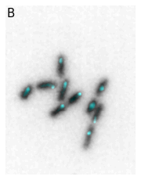
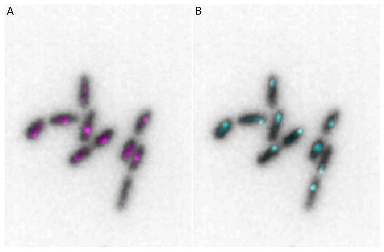
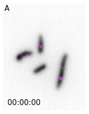
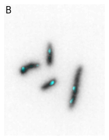
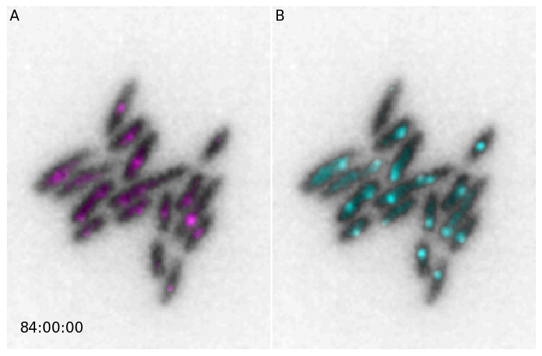

Illustrations#
import numpy as np
import skimage.io
from microfilm.microplot import microshow
import numpy as np
import skimage.io
from microfilm.microplot import microshow
image = skimage.io.imread('../demodata/coli_nucl_ori_ter.tif')
time = 10
microim = microshow(
images=image[:, time, :, :], fig_scaling=5,
cmaps=['blue','red', 'green'],
unit='um', scalebar_size_in_units=3, scalebar_unit_per_pix=0.065, scalebar_font_size=20,
label_text='A', label_font_size=0.04)
microim.savefig('../illustrations/composite.png', bbox_inches = 'tight', pad_inches = 0, dpi=600)

import numpy as np
import skimage.io
from microfilm.microanim import Microanim
image = skimage.io.imread('../demodata/coli_nucl_ori_ter.tif')
microanim = Microanim(data=image, cmaps=['blue','red', 'green'], fig_scaling=5,
unit='um', scalebar_size_in_units=3, scalebar_unit_per_pix=0.065,
scalebar_thickness=0.02, scalebar_font_size=20)
microanim.add_label('A', label_font_size=30)
microanim.add_time_stamp('T', 10, location='lower left', timestamp_size=20)
microanim.save_movie('../illustrations/composite_movie.gif', fps=15)

#microanim.save_movie('../illustrations/composite_movie.mp4', fps=10, quality=9)
from microfilm import microplot
import skimage.io
image = skimage.io.imread('../demodata/coli_nucl_ori_ter.tif')
microim1 = microplot.microshow(images=[image[0, 10, :, :], image[1, 10, :, :]],
cmaps=['gray_r', 'magenta'], flip_map=[False, False],
label_text='A', label_color='black')
microim2 = microplot.microshow(images=[image[0, 10, :, :], image[2, 10, :, :]],
cmaps=['gray_r', 'cyan'], flip_map=[False, False],
label_text='B', label_color='black')
micropanel = microplot.Micropanel(rows=1, cols=2)
micropanel.add_element(pos=[0,0], microim=microim1)
micropanel.add_element(pos=[0,1], microim=microim2)
micropanel.savefig('../illustrations/panel.png', bbox_inches = 'tight', pad_inches = 0, dpi=600)



from microfilm import microanim
import skimage.io
image = skimage.io.imread('../demodata/coli_nucl_ori_ter.tif')
microanim1 = microanim.Microanim(data=image[[0,1],::], cmaps=['gray_r', 'magenta'],
flip_map=[False, False], label_text='A', label_color='black')
microanim2 = microanim.Microanim(data=image[[0,2],::], cmaps=['gray_r', 'cyan'],
flip_map=[False, False], label_text='B', label_color='black')
microanim1.add_time_stamp(unit='T', unit_per_frame=3, location='lower-right', timestamp_color='black')
animpanel = microanim.Microanimpanel(rows=1, cols=2)
animpanel.add_element(pos=[0,0], microanim=microanim1)
animpanel.add_element(pos=[0,1], microanim=microanim2)
animpanel.save_movie('../illustrations/panel.gif')


